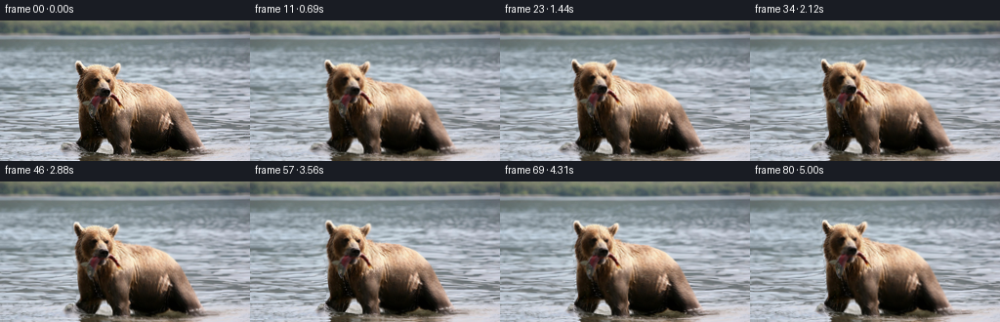
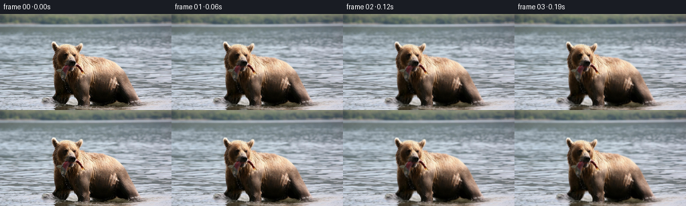

CODING AGENTS AS PIXEL WORLD MODELS
traex/GPT-6-Astra · 0872_s1
点击播放 · 原生 RGB 像素
逐轮保存的候选
回放视频、检查图与代码变化。
每份候选均可单独播放。实际图片检查记录在下方工具轨迹中。
候选 01播放与检查图
点击播放 · 原生 RGB 像素


展开代码变化
--- 上一保存版本
+++ 本次保存版本
@@ -0,0 +1,198 @@
+"""Animate the supplied RGB photograph using deterministic, nonlearned pixel motion.
+
+The forward deformation is solved inversely, so each frame is resampled only
+once from the original photograph. No external assets or models are used.
+"""
+from pathlib import Path
+import math
+import numpy as np
+from PIL import Image, ImageDraw, ImageFilter
+import artifact_io
+
+ROOT = Path(__file__).resolve().parent
+W, H, N, FPS = 256, 144, 81, 16
+Y, X = np.mgrid[:H, :W].astype(np.float32)
+
+
+def smooth(a, b, x):
+ t = np.clip((x - a) / (b - a), 0.0, 1.0)
+ return t*t*(3.0-2.0*t)
+
+
+def blur(a, radius):
+ return np.asarray(Image.fromarray(np.uint8(np.clip(a*255, 0, 255))).filter(
+ ImageFilter.GaussianBlur(radius)), dtype=np.float32)/255.0
+
+
+def sample(a, x, y):
+ # Reflected continuation is only needed at the water edges.
+ x = np.abs((x + W-1) % (2*(W-1)) - (W-1))
+ y = np.abs((y + H-1) % (2*(H-1)) - (H-1))
+ xi = np.floor(x).astype(np.int32)
+ yi = np.floor(y).astype(np.int32)
+ xj = np.minimum(xi+1, W-1)
+ yj = np.minimum(yi+1, H-1)
+ u, v = x-xi, y-yi
+ if a.ndim == 3:
+ u, v = u[..., None], v[..., None]
+ return ((a[yi, xi]*(1-u)+a[yi, xj]*u)*(1-v)
+ + (a[yj, xi]*(1-u)+a[yj, xj]*u)*v)
+
+
+def curve(t, knots, values):
+ # C1 continuous interpolation for unhurried animal motion.
+ j = min(len(knots)-2, max(0, int(np.searchsorted(knots, t)-1)))
+ s = np.clip((t-knots[j])/(knots[j+1]-knots[j]), 0, 1)
+ s = s*s*(3-2*s)
+ return values[j]*(1-s)+values[j+1]*s
+
+
+def main():
+ original = np.asarray(Image.open(ROOT/'first_frame.png').convert('RGB'))
+ assert original.shape == (H, W, 3)
+ image = original.astype(np.float32)
+
+ # The outline is transcribed from numeric RGB/color transitions. It is
+ # used for motion support, not for cutting and pasting the animal.
+ outline = [(77,41),(82,41),(85,46),(89,46),(94,44),(103,44),
+ (111,47),(115,47),(118,44),(122,43),(124,47),
+ (123,53),(120,56),(119,59),(126,60),(128,62),
+ (143,63),(155,65),(163,68),(170,72),(176,76),
+ (182,82),(186,87),(190,93),(194,101),(198,109),
+ (201,116),(205,121),(209,128),(214,134),
+ (211,139),(199,144),(82,144),(80,139),(85,134),
+ (80,131),(78,127),(78,125),(81,121),(82,117),
+ (81,111),(80,105),(80,99),(80,91),(80,84),
+ (79,80),(78,75),(78,70),(77,68),(79,64),
+ (81,60),(81,55),(79,52),(77,48)]
+ scale = 4
+ mask_image = Image.new('L',(W*scale,H*scale),0)
+ d = ImageDraw.Draw(mask_image)
+ d.polygon([(x*scale,y*scale) for x,y in outline], fill=255)
+ mask_image = mask_image.resize((W,H),Image.Resampling.LANCZOS)
+ subject = np.asarray(mask_image,dtype=np.float32)/255
+ # Water visible between the two forelegs stays water.
+ hole_region = smooth(98,104,X)*(1-smooth(114,119,X))*smooth(119,124,Y)*(1-smooth(132,137,Y))
+ cool = smooth(0,12,image[...,2]-image[...,0]) * smooth(65,120,image.mean(2))
+ subject *= (1-hole_region*cool)
+ subject = blur(subject,0.45)
+ protect = np.asarray(Image.fromarray(np.uint8(subject*255)).filter(
+ ImageFilter.MaxFilter(9)).filter(ImageFilter.GaussianBlur(2.2)),dtype=np.float32)/255
+ support = np.asarray(Image.fromarray(np.uint8(subject*255)).filter(
+ ImageFilter.MaxFilter(17)).filter(ImageFilter.GaussianBlur(5.5)),dtype=np.float32)/255
+ # The lowest, brown part of the water is the animal's reflection.
+ reflection = smooth(131,144,Y)
+ water = (1-subject*(1-.8*reflection))*smooth(11,24,Y)
+ water_motion = (1-protect*(1-.42*reflection))*smooth(10,28,Y)
+
+ head = (1-smooth(84,108,Y))*(1-smooth(120,143,X))*smooth(64,80,X)*smooth(27,41,Y)
+ jaw = np.exp(-((X-105)/11)**2-((Y-84)/6)**2)
+ fish = np.exp(-((X-96)/4.7)**2-((Y-94)/10)**2)*smooth(83,99,Y)
+ foreleft = np.exp(-((X-89)/9.0)**2-((Y-121)/18)**2)*smooth(93,119,Y)
+ foreright = np.exp(-((X-128)/9.5)**2-((Y-123)/20)**2)*smooth(94,121,Y)
+ torso = np.exp(-((X-156)/36)**2-((Y-90)/30)**2)
+ knots = [0,.65,1.45,2.1,2.9,3.6,4.35,5]
+ frames = [original.copy()]
+
+ for i in range(1,N):
+ t = i/FPS
+ gait = 2*math.pi*t/2.6
+ # A slow shift of weight and two small, alternating submerged steps.
+ bodyx = -.47*t + .65*math.sin(gait)
+ bodyy = .62*math.sin(gait*2) - .35*(1-math.cos(gait))
+ headx = curve(t,knots,[0,-.4,-1.2,-1.7,-.7,.5,.3,-.4])
+ heady = curve(t,knots,[0,-1.2,-3.2,-2.6,-.5,.2,-1.3,-2.1])
+ angle = math.radians(curve(t,knots,[0,-1.0,-3.3,-2.6,-.5,1.3,.3,-1.3]))
+ c,s = math.cos(angle),math.sin(angle)
+ hx = headx+(c-1)*(X-109)-s*(Y-91)
+ hy = heady+s*(X-109)+(c-1)*(Y-91)
+ dx = support*(bodyx + head*hx)
+ dy = support*(bodyy + head*hy)
+ breathing = .007*math.sin(2*math.pi*t/3.8)
+ dx += torso*(X-140)*breathing
+ dy += torso*(Y-109)*breathing
+ dx += foreleft*.85*math.sin(gait) - foreright*.85*math.sin(gait)
+ dy += foreleft*1.2*math.sin(gait) - foreright*1.0*math.sin(gait)
+ # The held fish follows the muzzle, with a small, decaying tail twitch.
+ twitch = math.sin(2*math.pi*1.7*t)*(.5+.5*math.cos(2*math.pi*t/2.7))
+ dx += .76*twitch*fish
+ dy += .25*math.sin(2*math.pi*1.7*t)*fish
+ chew = .52*(1-math.cos(2*math.pi*t/.98))*(.65+.35*math.cos(t))
+ dy += jaw*chew
+
+ # Advection and small refractive waves in the river. Perspective
+ # reduces the motion of distant water; all phases start at zero.
+ depth = smooth(13,144,Y)
+ advection = (.60+1.05*depth)*t
+ wx = advection + (1.05+.6*depth)*(np.sin(Y*.19+X*.018-t*1.45)-np.sin(Y*.19+X*.018))
+ wx += .62*(np.sin(Y*.41-X*.031+t*1.9)-np.sin(Y*.41-X*.031))
+ wy = (.17+.32*depth)*(np.sin(X*.088+Y*.28-t*1.9)-np.sin(X*.088+Y*.28))
+ wy += .15*depth*(np.sin(X*.16-Y*.64+t*2.5)-np.sin(X*.16-Y*.64))
+ # Gentle movement of the reflection at the waterline.
+ wy += reflection*.25*(np.sin(X*.11-t*2.1)-np.sin(X*.11))
+ dx += water_motion*wx
+ dy += water_motion*wy
+ field = np.stack([dx,dy],axis=-1)
+ sx,sy = X-dx,Y-dy
+ for _ in range(4):
+ q = sample(field,sx,sy)
+ sx,sy = X-q[...,0],Y-q[...,1]
+ frame = sample(image,sx,sy)
+ wm = sample(water,sx,sy)
+
+ # Flowing specular glints: subtle, textured luminance changes, rather
+ # than fresh painted water, preserve the photograph's lighting.
+ shimmer = (np.sin(X*.20+Y*1.55-t*2.4)-np.sin(X*.20+Y*1.55))
+ shimmer *= .90*wm*smooth(25,95,Y)
+ shimmer += .40*wm*(np.sin(X*.049+Y*.8+t*1.6)-np.sin(X*.049+Y*.8))
+ frame += shimmer[...,None]*np.array([.84,.95,1.0],np.float32)
+
+ # Expanding low-amplitude surface ripples from the submerged paws.
+ ripple = np.zeros((H,W),np.float32)
+ for k, onset in enumerate([.25,1.25,2.15,3.1,4.15]):
+ age = t-onset
+ if not 0<age<2.5:
+ continue
+ cx = (88 if k%2==0 else 128)+bodyx
+ cy = (134.5 if k%2==0 else 139.5)+.25*bodyy
+ rr = np.sqrt((X-cx)**2+((Y-cy)*4.8)**2)
+ radius = 5+13*age
+ band = np.exp(-((rr-radius)/5.0)**2)
+ gate = min(1,age/.22)*max(0,1-age/2.5)
+ broken = .67+.33*np.sin(X*.27+Y*.66+k)
+ ripple += 4.2*gate*band*np.sin((rr-radius)*1.05)*broken
+ ripple *= wm*smooth(118,131,Y)
+ frame += ripple[...,None]*np.array([.86,.96,1.0],np.float32)
+
+ # Sparse, tiny drops falling from the wet fish. Their trajectories
+ # start at the animated muzzle and accelerate under gravity.
+ for k, onset in enumerate([.52,1.70,2.87,4.18]):
+ age = t-onset
+ if 0<age<.54:
+ # Source tail tip is near (97,99).
+ origin_x,origin_y = 97.,99.
+ local_head = float(head[99,97])
+ ox = origin_x+bodyx+local_head*(headx+(c-1)*(origin_x-109)-s*(origin_y-91))
+ oy = origin_y+bodyy+local_head*(heady+s*(origin_x-109)+(c-1)*(origin_y-91))
+ px = ox+(-.35+.23*k)*age
+ py = oy+10*age+85*age*age
+ length = .52+age*1.7
+ a = np.exp(-((X-px)/.37)**2-((Y-py)/length)**2)
+ a *= .29*min(1,age/.08)*min(1,(.54-age)/.10)
+ frame = frame*(1-a[...,None])+np.array([186.,193.,192.])*a[...,None]
+
+ frames.append(np.uint8(np.clip(np.rint(frame),0,255)))
+
+ frames = np.stack(frames)
+ frames[0] = original
+ artifact_io.save(frames, ROOT)
+ # Quantitative validation does not require visually opening the image.
+ assert frames.shape == (81,144,256,3)
+ assert frames.dtype == np.uint8
+ assert np.array_equal(frames[0],original)
+ changes = np.abs(np.diff(frames.astype(np.float32),axis=0)).mean(axis=(1,2,3))
+ print('Saved 81 RGB frames. First frame exact.')
+ print('Mean frame-to-frame RGB change: %.3f; maximum %.3f' % (changes.mean(),changes.max()))
+
+if __name__ == '__main__':
+ main()
可观测工具轨迹
实际执行的命令与返回图片。
命令 1exit 0
/bin/bash -lc 'ls -la; cat prompt.txt; cat GENERATION_RULES.md'
命令 2exit 0
/bin/bash -lc "cat task_spec.json; cat artifact_io.py; python - <<'PY'
from PIL import Image
import numpy as np
im=np.array(Image.open('first_frame.png'))
print(im.shape)
print('RGB range',im.min((0,1)),im.max((0,1)))
# average colors within 8x8 tiles
for y in range(0,144,8):
print(y, ' '.join('%02x%02x%02x'%tuple(im[y:y+8,x:x+8].mean((0,1)).astype(int)) for x in range(0,256,8)))
PY"命令 3exit 0
/bin/bash -lc "python - <<'PY'
import numpy as np
from PIL import Image
im=np.array(Image.open('first_frame.png')).astype(float)
# symbolic color analysis 2x2 average across subject: W water, dark letters are warm fur; bright tones upper case
for y in range(34,144,2):
s=''
for x in range(64,214,2):
r,g,b=im[y:y+2,x:x+2].mean((0,1)); v=(r+g+b)/3
if b>r+3 and b>g: c='.' if v<135 else '~'
elif r>b+15: c='o' if v<65 else 'b' if v<120 else 'B' if v<175 else 'H'
elif v<30: c='#'
elif v<65: c='x'
elif v<110: c=':'
elif v<150: c='-'
elif v<185: c='='
else: c='+'
s+=c
print('%03d'%y,s)
PY"命令 4exit 0
/bin/bash -lc "python - <<'PY'
from PIL import Image
import numpy as np
im=np.array(Image.open('first_frame.png'))
# compact luminance raster with 1 pix per symbol
v=im.mean(2)
cs='@%#*+=-:. '
print('head luminance (x 76 to 129)')
for y in range(40,102):
print(f'{y:3} '+''.join(cs[min(9,int(v[y,x]/256*10))] for x in range(76,130)))
print('\\nRGB per 2 pixel cell muzzle (x86 to116)')
for y in range(76,100,2):
print(y, ' '.join('%02x%02x%02x'%tuple(im[y:y+2,x:x+2].mean((0,1)).astype(int)) for x in range(84,118,2)))
PY"命令 5exit 0
/bin/bash -lc "python - <<'PY'
import numpy as np
from PIL import Image
im=np.array(Image.open('first_frame.png')).astype(float); r,g,b=im.transpose(2,0,1)
m=(r-b>6)|((r+g+b)/3<75)
for y in range(37,144):
xs=np.where(m[y,70:216])[0]+70
# runs length >=2
runs=np.split(xs,np.where(np.diff(xs)>1)[0]+1)
print(y, ' '.join(f'{z[0]}:{z[-1]}' for z in runs if len(z)>=2))
PY"命令 6exit 0
/bin/bash -lc "python - <<'PY'
from PIL import Image
import numpy as np
p=np.array(Image.open('first_frame.png')).astype(float)
# geometry of low-saturation pixels and red mouth. space = dark warm bear; G = silver/olive fish, R = flesh red
for y in range(74,105):
s=''
for x in range(80,127):
r,g,b=p[y,x]; v=(r+g+b)/3
if b>r+2: s+='~'
elif r>g*1.25 and b>g*.85 and r>45: s+='R'
elif r-b < 17 and v>40: s+='G'
elif r-b<22 and v>30: s+='g'
elif v>130:s+='O'
elif v>80:s+='o'
elif v>35:s+='.'
else:s+=' '
print(y,s)
PY"命令 7exit 0
/bin/bash -lc "cat > generate.py <<'PY'
\"\"\"Animate the supplied RGB photograph using deterministic, nonlearned pixel motion.
The forward deformation is solved inversely, so each frame is resampled only
once from the original photograph. No external assets or models are used.
\"\"\"
from pathlib import Path
import math
import numpy as np
from PIL import Image, ImageDraw, ImageFilter
import artifact_io
ROOT = Path(__file__).resolve().parent
W, H, N, FPS = 256, 144, 81, 16
Y, X = np.mgrid[:H, :W].astype(np.float32)
def smooth(a, b, x):
t = np.clip((x - a) / (b - a), 0.0, 1.0)
return t*t*(3.0-2.0*t)
def blur(a, radius):
return np.asarray(Image.fromarray(np.uint8(np.clip(a*255, 0, 255))).filter(
ImageFilter.GaussianBlur(radius)), dtype=np.float32)/255.0
def sample(a, x, y):
# Reflected continuation is only needed at the water edges.
x = np.abs((x + W-1) % (2*(W-1)) - (W-1))
y = np.abs((y + H-1) % (2*(H-1)) - (H-1))
xi = np.floor(x).astype(np.int32)
yi = np.floor(y).astype(np.int32)
xj = np.minimum(xi+1, W-1)
yj = np.minimum(yi+1, H-1)
u, v = x-xi, y-yi
if a.ndim == 3:
u, v = u[..., None], v[..., None]
return ((a[yi, xi]*(1-u)+a[yi, xj]*u)*(1-v)
+ (a[yj, xi]*(1-u)+a[yj, xj]*u)*v)
def curve(t, knots, values):
# C1 continuous interpolation for unhurried animal motion.
j = min(len(knots)-2, max(0, int(np.searchsorted(knots, t)-1)))
s = np.clip((t-knots[j])/(knots[j+1]-knots[j]), 0, 1)
s = s*s*(3-2*s)
return values[j]*(1-s)+values[j+1]*s
def main():
original = np.asarray(Image.open(ROOT/'first_frame.png').convert('RGB'))
assert original.shape == (H, W, 3)
image = original.astype(np.float32)
# The outline is transcribed from numeric RGB/color transitions. It is
# used for motion support, not for cutting and pasting the animal.
outline = [(77,41),(82,41),(85,46),(89,46),(94,44),(103,44),
(111,47),(115,47),(118,44),(122,43),(124,47),
(123,53),(120,56),(119,59),(126,60),(128,62),
(143,63),(155,65),(163,68),(170,72),(176,76),
(182,82),(186,87),(190,93),(194,101),(198,109),
(201,116),(205,121),(209,128),(214,134),
(211,139),(199,144),(82,144),(80,139),(85,134),
(80,131),(78,127),(78,125),(81,121),(82,117),
(81,111),(80,105),(80,99),(80,91),(80,84),
(79,80),(78,75),(78,70),(77,68),(79,64),
(81,60),(81,55),(79,52),(77,48)]
scale = 4
mask_image = Image.new('L',(W*scale,H*scale),0)
d = ImageDraw.Draw(mask_image)
d.polygon([(x*scale,y*scale) for x,y in outline], fill=255)
mask_image = mask_image.resize((W,H),Image.Resampling.LANCZOS)
subject = np.asarray(mask_image,dtype=np.float32)/255
# Water visible between the two forelegs stays water.
hole_region = smooth(98,104,X)*(1-smooth(114,119,X))*smooth(119,124,Y)*(1-smooth(132,137,Y))
cool = smooth(0,12,image[...,2]-image[...,0]) * smooth(65,120,image.mean(2))
subject *= (1-hole_region*cool)
subject = blur(subject,0.45)
protect = np.asarray(Image.fromarray(np.uint8(subject*255)).filter(
ImageFilter.MaxFilter(9)).filter(ImageFilter.GaussianBlur(2.2)),dtype=np.float32)/255
support = np.asarray(Image.fromarray(np.uint8(subject*255)).filter(
ImageFilter.MaxFilter(17)).filter(ImageFilter.GaussianBlur(5.5)),dtype=np.float32)/255
# The lowest, brown part of the water is the animal's reflection.
reflection = smooth(131,144,Y)
water = (1-subject*(1-.8*reflection))*smooth(11,24,Y)
water_motion = (1-protect*(1-.42*reflection))*smooth(10,28,Y)
head = (1-smooth(84,108,Y))*(1-smooth(120,143,X))*smooth(64,80,X)*smooth(27,41,Y)
jaw = np.exp(-((X-105)/11)**2-((Y-84)/6)**2)
fish = np.exp(-((X-96)/4.7)**2-((Y-94)/10)**2)*smooth(83,99,Y)
foreleft = np.exp(-((X-89)/9.0)**2-((Y-121)/18)**2)*smooth(93,119,Y)
foreright = np.exp(-((X-128)/9.5)**2-((Y-123)/20)**2)*smooth(94,121,Y)
torso = np.exp(-((X-156)/36)**2-((Y-90)/30)**2)
knots = [0,.65,1.45,2.1,2.9,3.6,4.35,5]
frames = [original.copy()]
for i in range(1,N):
t = i/FPS
gait = 2*math.pi*t/2.6
# A slow shift of weight and two small, alternating submerged steps.
bodyx = -.47*t + .65*math.sin(gait)
bodyy = .62*math.sin(gait*2) - .35*(1-math.cos(gait))
headx = curve(t,knots,[0,-.4,-1.2,-1.7,-.7,.5,.3,-.4])
heady = curve(t,knots,[0,-1.2,-3.2,-2.6,-.5,.2,-1.3,-2.1])
angle = math.radians(curve(t,knots,[0,-1.0,-3.3,-2.6,-.5,1.3,.3,-1.3]))
c,s = math.cos(angle),math.sin(angle)
hx = headx+(c-1)*(X-109)-s*(Y-91)
hy = heady+s*(X-109)+(c-1)*(Y-91)
dx = support*(bodyx + head*hx)
dy = support*(bodyy + head*hy)
breathing = .007*math.sin(2*math.pi*t/3.8)
dx += torso*(X-140)*breathing
dy += torso*(Y-109)*breathing
dx += foreleft*.85*math.sin(gait) - foreright*.85*math.sin(gait)
dy += foreleft*1.2*math.sin(gait) - foreright*1.0*math.sin(gait)
# The held fish follows the muzzle, with a small, decaying tail twitch.
twitch = math.sin(2*math.pi*1.7*t)*(.5+.5*math.cos(2*math.pi*t/2.7))
dx += .76*twitch*fish
dy += .25*math.sin(2*math.pi*1.7*t)*fish
chew = .52*(1-math.cos(2*math.pi*t/.98))*(.65+.35*math.cos(t))
dy += jaw*chew
# Advection and small refractive waves in the river. Perspective
# reduces the motion of distant water; all phases start at zero.
depth = smooth(13,144,Y)
advection = (.60+1.05*depth)*t
wx = advection + (1.05+.6*depth)*(np.sin(Y*.19+X*.018-t*1.45)-np.sin(Y*.19+X*.018))
wx += .62*(np.sin(Y*.41-X*.031+t*1.9)-np.sin(Y*.41-X*.031))
wy = (.17+.32*depth)*(np.sin(X*.088+Y*.28-t*1.9)-np.sin(X*.088+Y*.28))
wy += .15*depth*(np.sin(X*.16-Y*.64+t*2.5)-np.sin(X*.16-Y*.64))
# Gentle movement of the reflection at the waterline.
wy += reflection*.25*(np.sin(X*.11-t*2.1)-np.sin(X*.11))
dx += water_motion*wx
dy += water_motion*wy
field = np.stack([dx,dy],axis=-1)
sx,sy = X-dx,Y-dy
for _ in range(4):
q = sample(field,sx,sy)
sx,sy = X-q[...,0],Y-q[...,1]
frame = sample(image,sx,sy)
wm = sample(water,sx,sy)
# Flowing specular glints: subtle, textured luminance changes, rather
# than fresh painted water, preserve the photograph's lighting.
shimmer = (np.sin(X*.20+Y*1.55-t*2.4)-np.sin(X*.20+Y*1.55))
shimmer *= .90*wm*smooth(25,95,Y)
shimmer += .40*wm*(np.sin(X*.049+Y*.8+t*1.6)-np.sin(X*.049+Y*.8))
frame += shimmer[...,None]*np.array([.84,.95,1.0],np.float32)
# Expanding low-amplitude surface ripples from the submerged paws.
ripple = np.zeros((H,W),np.float32)
for k, onset in enumerate([.25,1.25,2.15,3.1,4.15]):
age = t-onset
if not 0<age<2.5:
continue
cx = (88 if k%2==0 else 128)+bodyx
cy = (134.5 if k%2==0 else 139.5)+.25*bodyy
rr = np.sqrt((X-cx)**2+((Y-cy)*4.8)**2)
radius = 5+13*age
band = np.exp(-((rr-radius)/5.0)**2)
gate = min(1,age/.22)*max(0,1-age/2.5)
broken = .67+.33*np.sin(X*.27+Y*.66+k)
ripple += 4.2*gate*band*np.sin((rr-radius)*1.05)*broken
ripple *= wm*smooth(118,131,Y)
frame += ripple[...,None]*np.array([.86,.96,1.0],np.float32)
# Sparse, tiny drops falling from the wet fish. Their trajectories
# start at the animated muzzle and accelerate under gravity.
for k, onset in enumerate([.52,1.70,2.87,4.18]):
age = t-onset
if 0<age<.54:
# Source tail tip is near (97,99).
origin_x,origin_y = 97.,99.
local_head = float(head[99,97])
ox = origin_x+bodyx+local_head*(headx+(c-1)*(origin_x-109)-s*(origin_y-91))
oy = origin_y+bodyy+local_head*(heady+s*(origin_x-109)+(c-1)*(origin_y-91))
px = ox+(-.35+.23*k)*age
py = oy+10*age+85*age*age
length = .52+age*1.7
a = np.exp(-((X-px)/.37)**2-((Y-py)/length)**2)
a *= .29*min(1,age/.08)*min(1,(.54-age)/.10)
frame = frame*(1-a[...,None])+np.array([186.,193.,192.])*a[...,None]
frames.append(np.uint8(np.clip(np.rint(frame),0,255)))
frames = np.stack(frames)
frames[0] = original
artifact_io.save(frames, ROOT)
# Quantitative validation does not require visually opening the image.
assert frames.shape == (81,144,256,3)
assert frames.dtype == np.uint8
assert np.array_equal(frames[0],original)
changes = np.abs(np.diff(frames.astype(np.float32),axis=0)).mean(axis=(1,2,3))
print('Saved 81 RGB frames. First frame exact.')
print('Mean frame-to-frame RGB change: %.3f; maximum %.3f' % (changes.mean(),changes.max()))
if __name__ == '__main__':
main()
PY
python generate.py"命令 8exit 0
/bin/bash -lc "command -v ffmpeg || true; ls -lh pixels.npz index.html; python - <<'PY'
from pathlib import Path
from PIL import Image
import numpy as np
fs=sorted(Path('frames').glob('*.png'))
a=np.stack([np.array(Image.open(p)) for p in fs])
assert len(fs)==81 and a.shape==(81,144,256,3)
assert np.array_equal(a[0],np.array(Image.open('first_frame.png')))
p=np.load('pixels.npz')['pixels']
assert p.shape==(144,256,81)
print('Verified saved PNG and RGB tensor dimensions; first frame exact.')
print('Final-frame mean RGB difference:',np.abs(a[-1].astype(float)-a[0]).mean())
PY"保存候选 1 份；完成命令 8 次；可验证图片返回 0 张。原始 API 响应与完整日志保留在本地。